케르베로스
- 레벨간 전환 시스템
- 시네마틱 연출 시스템
- 플레이어 사망 / 리스폰 시스템
- 이동 시스템
- 액션 시스템 (구르기, 넉백, 스킬)
- 스킬 시스템 (차원변경)
- 체력 및 스테미너 시스템
- 차원변경 시스템 기획 및 제작
- 게임 전반 UI 기획 및 제작
- UI 애니메이션 기획 및 제작
- 튜토리얼 / 컷 씬 / 일시정지 / 팝업
차원변경 시스템
초반부 컷씬 진행 이후 차원변경 스킬을 획득합니다.

기본적으로 3D 쿼터뷰 환경에서 게임을 플레이하고, 특정 지역/맵에서 2D 사이드뷰 전환(A키), 2D 백 뷰 전환(S키) 능력이 활성화됩니다.
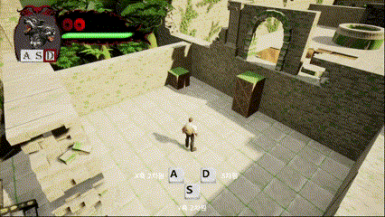
사이드 뷰로 전환할 경우 카메라는 Y축 상(언리얼 엔진 기준 좌표계)에 위치하여 플레이어를 바라보게 되며, 플레이어의 이동은 X축 이동으로 제한됩니다. 백 뷰로 전환할 경우 카메라는 X축 상에 위치하여 플레이어를 바라보게 되며, 플레이어의 이동은 Y축 이동으로 제한됩니다.
기존 3D뷰에 위치하던 장애물들이 2D 오브젝트로 변환되어 플레이어와 상호작용합니다. 3D 카메라의 기본 투영방식인 원근투영 방식을 스킬 사용 시 직교투영 방식으로 변경하여 2D 연출의 느낌을 더했습니다.


월드 내 플레이어 좌표는 변화가 없으며, 카메라의 좌표와 투영방법만을 변경해 착시를 주었습니다.
3D 공간을 2D로 변경하므로 플레이어와 맵 오브젝트가 겹치는 경우가 발생할 수 있어 스킬 사용 시 카메라가 위치할 좌표 축으로 레이캐스트를 발사합니다. 레이캐스트는 두 가지 오브젝트를 판별합니다.
- 상호작용이 가능한 맵 오브젝트 — 플레이어와 충돌하는 장애물로 레이캐스트에 닿은 경우 차원변경이 불가합니다.
- 맵을 구성하는 벽 오브젝트 — 플레이어와 충돌하지만 차원변경은 가능하며, 차원변경 시 비활성화됩니다.
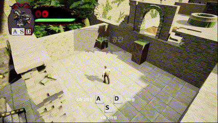
플레이어 액션
스테미너 시스템
Get World Timer를 사용한 총 세 개의 타이머를 통해 플레이어의 스테미너를 구현했습니다.
1-1. 스테미너 소진 타이머
초기 개발단계에서는 단순히 달리기 키 입력 시작과 달리기 키 입력 해제로 타이머의 실행 여부를 적용했는데, 지형 지물에 막히거나 피해를 입어 넉백을 당한 경우에도 키를 계속 입력하고 있으면 타이머가 계속 유지되었습니다.
때문에 sprintSpeed라는 스테미너가 소진될 속도의 임계치를 정해 달리기 키를 입력하고 있으며, 플레이어의 속도가 임계치 이상일 경우에만 타이머가 동작하도록 수정하였습니다.
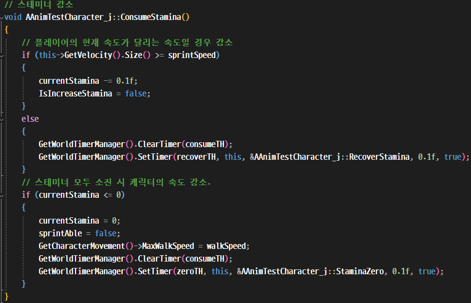
1-2. 스테미너 회복 타이머
플레이어의 이동속도가 임계치보다 낮을 때 실행됩니다.
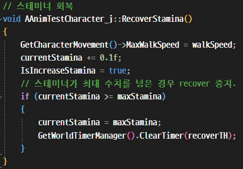
1-3. 탈진 타이머
스테미너가 모두 소진되었을 때 실행됩니다. waitCount라는 딜레이 시간동안 달리기가 불가능하며 반복입력을 방지하기 위해 회복 타이머를 중지합니다. 딜레이 시간이 종료되면 일정량의 스테미너를 즉시 회복하고 달리기가 가능해집니다.
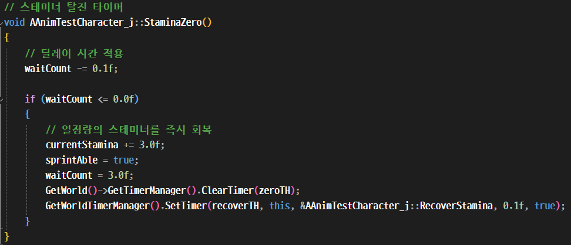
구르기 액션
캐릭터는 Character Movement로 움직입니다. 기본 상태는 Walking 모드로 설정되어 있습니다.
초기 개발 단계에서 구르기 시에 캐릭터의 충돌체가 변경되며 땅에 고꾸라지는 듯한 움직임이 보였는데, 구르기 시 Character Movement의 모드를 Flying 모드로 변경하여 중력을 제거하여 보다 매끄러운 움직임이 가능해졌습니다.

사다리 타기 액션
플레이어가 사다리의 트리거에 위치한 경우 F키 입력을 활성화합니다. F키를 입력한 경우 해당 사다리의 위치와 회전 값을 기준으로 플레이어를 사다리에 부착시키고 사다리타기 액션을 실행합니다. 이때 플레이어의 이동은 Z축으로 제한됩니다.
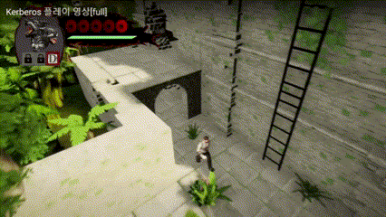
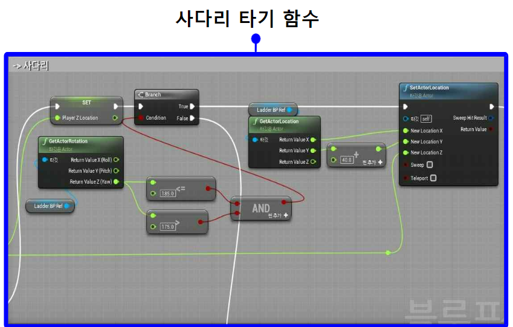
UI 시스템
HUD를 용도별로 캡슐화하고, 각각의 레이어를 관리하기 위해 게임 내 HUD를 총 4개로 구분하였습니다.
1. DefaultHUD
플레이어 상태 바가 포함됩니다. (상시 표출, 메인 UI)
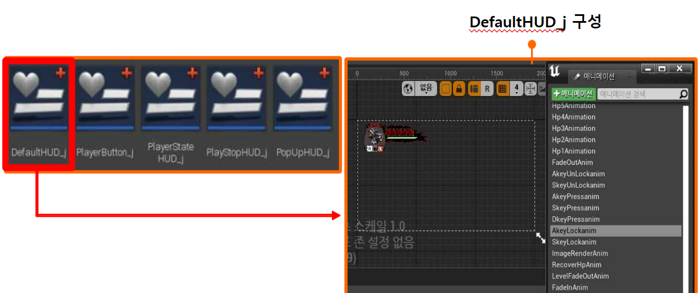
2. PlayerStateHUD
캐릭터 피격, 스테미너 소진 등 화면 연출이 포함됩니다. (이벤트 UI)
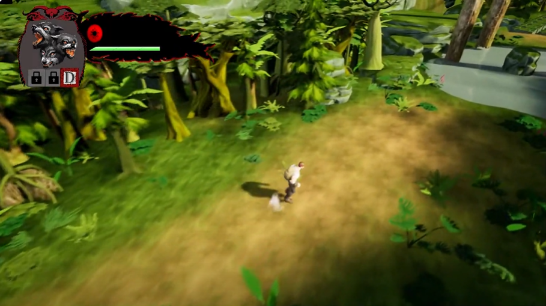
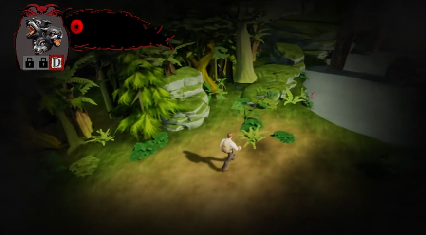
3. PlayStopHUD
일시정지 팝업이 포함됩니다. (일시정지 UI)
4. PopUpHUD
게임 진행 중 팝업이 포함됩니다. (메세지 팝업, 컷 씬 팝업, 팝업 UI)
컷 씬 : 컷 별로 구성된 애니메이션을 플레이합니다.

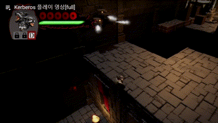